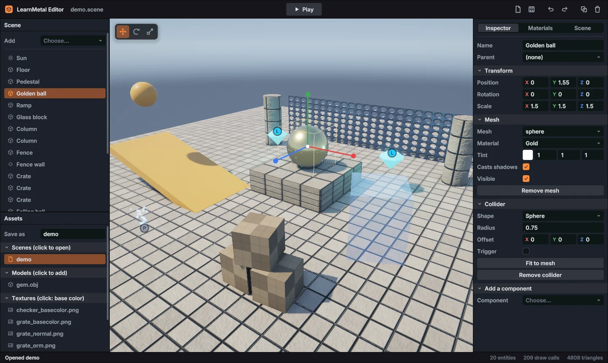
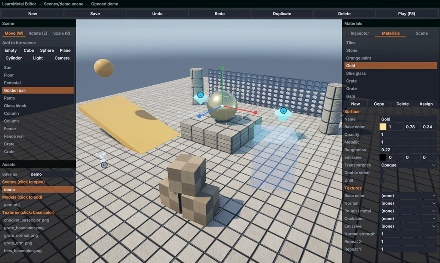

In Practice
Engine: The Editor#
The previous chapters built Marble's level in code: a function with a line per box. That is fine for one small level and miserable for ten. This chapter adds what every engine eventually grows: an editor, a program in which scenes are put together by looking at them.
The editor is not a separate technology. It is a game made with the engine, about eleven hundred lines, whose gameplay happens to be editing. Three new pieces of the engine make it possible, and games can use all three: a user interface, scene files, and a way to look at a scene without being part of it.
swift run Editor demo
./build/editor demo
Hold the right mouse button and use W A S D to fly. Click to select, press W, E or R and drag a colored handle to move, rotate or scale. Drag a number sideways to change it, or click it and type. F5 plays the scene.

An interface in immediate mode#
An editor is mostly panels full of numbers. The usual way to build those is a tree of widget objects that must be kept in step with the data they show. The engine takes the other road, the one made popular by Dear ImGui: immediate mode. There are no widget objects. Every frame, the program calls one function per control, and that call both draws the control and reports what the user did with it.
This is the entire inspector section for a light:
if var light = scene[selected, Light.self] {
gui.heading("Light")
var type = Int(light.type.rawValue)
if gui.combo("Type", &type, ["Directional", "Point", "Spot"]) { light.type = LightType(rawValue: UInt32(type)) ?? .point }
gui.color("Color", &light.color)
gui.dragFloat("Intensity", &light.intensity, speed: 0.05, range: 0...1000)
if light.type != .directional { gui.dragFloat("Range", &light.range, speed: 0.05, range: 0.1...500) }
if light.type == .spot {
dragDegrees(gui, "Inner cone", &light.innerConeAngle, 0...89)
dragDegrees(gui, "Outer cone", &light.outerConeAngle, 0...89)
}
if light.type == .directional { gui.checkbox("Casts shadows", &light.castsShadows) }
if gui.button("Remove light") {
scene.remove(Light.self, selected)
} else {
scene[selected, Light.self] = light
}
}
if (Light* light = scene.get<Light>(selected_)) {
gui_.heading("Light");
int type = int(light->type);
if (gui_.combo("Type", type, {"Directional", "Point", "Spot"})) light->type = LightType(type);
gui_.color("Color", light->color);
gui_.dragFloat("Intensity", light->intensity, 0.05f, 0.0f, 1000.0f);
if (light->type != LightType::Directional) gui_.dragFloat("Range", light->range, 0.05f, 0.1f, 500.0f);
if (light->type == LightType::Spot) {
dragDegrees(gui_, "Inner cone", light->innerConeAngle, 0.0f, 89.0f);
dragDegrees(gui_, "Outer cone", light->outerConeAngle, 0.0f, 89.0f);
}
if (light->type == LightType::Directional) gui_.checkbox("Casts shadows", light->castsShadows);
if (gui_.button("Remove light")) scene.remove<Light>(selected_);
}
Read it as a description of the panel, top to bottom. An if around a call is how a control appears only when it makes sense: a range for point and spot lights, cone angles for spot lights alone. No code hides or shows anything; the rows that are not called are simply not there this frame.
A control is small. This is a checkbox, complete:
@discardableResult
public func checkbox(_ label: String, _ value: inout Bool) -> Bool {
let id = makeId(label)
guard let row = nextRow() else { return false }
let field = splitRow(row, label)
let side = row.size.y - 6
let box = Rect(position: field.position + Vec2(0, 3), size: Vec2(side, side))
let clicked = pressed(id, box)
if clicked {
value.toggle()
changed = true
}
canvas.rect(box.position, box.size, mouseFree && box.contains(mouse) ? style.fieldHot : style.field)
if value { canvas.rect(box.position + Vec2(4, 4), box.size - Vec2(8, 8), style.accent) }
return clicked
}
bool Gui::checkbox(const std::string& label, bool& value) {
uint64_t id = makeId(label);
Rect row, field;
if (!nextRow(row)) return false;
splitRow(row, label, field);
float side = row.size.y - 6;
Rect box{field.position + Vec2{0, 3}, Vec2{side, side}};
bool clicked = pressed(id, box);
if (clicked) {
value = !value;
changed_ = true;
}
canvas_->rect(box.position, box.size, mouseFree_ && box.contains(mouse_) ? style.fieldHot : style.field);
if (value) canvas_->rect(box.position + Vec2{4, 4}, box.size - Vec2{8, 8}, style.accent);
return clicked;
}
It asks for the next row of the panel, tests whether the mouse went down on its square, flips the value if so, and draws itself with the engine's canvas. The value lives in the caller's data and nowhere else, so there is nothing to synchronize.
The little that must survive from one frame to the next is kept by the Gui under an id computed from the panel's title and the control's label: which control the mouse is holding, which field has the keyboard, how far each panel is scrolled. Dragging a number is the control remembering that it is "active" until the button comes up, and adding the pointer's movement to the value in every frame in between.
Two details are worth knowing before you write your own controls. Rows scrolled out of a panel are skipped whole, drawing nothing and reacting to nothing, which is how panels clip without any help from the GPU. And a pop-up list is drawn at the very end of the frame so that it lands on top of everything; its choice reaches the control that opened it one frame later.

Scenes as text#
What the editor saves is a text file with one statement per line:
learnmetal-scene 1
material "Gold"
baseColor 1 0.78 0.34 1
metallic 1
roughness 0.22
...
entity "Golden ball"
transform 0 1.55 0 0 0 0 1 1.5 1.5 1.5
mesh "sphere" 3 1 1 1 1 1 1
collider sphere 0.75 0 0 0 0
entity "Crate"
transform 1.7 0.4 5 0 0 0 1 0.8 0.8 0.8
mesh "cube" 5 1 1 1 1 1 1
collider box 0.4 0.4 0.4 0 0 0 0
body dynamic 0.5 0.1 0.6 0.05 1
Materials come first, then entities, each followed by one line per component. A mesh line names the mesh and gives the position of its material in the file; textures and models are stored by name, never as data. Lines a reader does not recognize are skipped, so an older build can open a newer file.
Text was chosen over a binary format for one reason: you will keep scenes in git. A line per component means that moving one crate changes one line, and the diff says exactly that. To make this hold, numbers are written in the shortest form that reads back to the very same float (0.22, not 0.2199999988), and opening a scene and saving it again changes nothing in the file.
A game loads a scene with one call:
var materials: [NamedMaterial] = []
loadSceneFile(engine.assets.path("Scenes/demo.scene"), into: engine.scene, materials: &materials,
settings: &engine.renderer.settings, assets: engine.assets.sceneAssets)
std::vector<NamedMaterial> materials;
loadSceneFile(engine.assets().path("Scenes/demo.scene"), engine.scene, materials, engine.renderer().settings,
sceneAssets(engine.assets()));
What a scene file holds is entities and the engine's own components. Game logic stays in code: Marble's gems and its ferry are not something the editor knows about. A game typically loads a scene and then finds the entities it cares about by name.
Looking without being there#
The renderer draws from the first active camera it finds, and a scene being edited usually has one already: the game's. The editor needs a view of its own that does not disturb it, and that never ends up in the saved file.
private func createCamera(_ engine: Engine) {
camera = engine.scene.create("Editor camera")
engine.scene.add(camera, Transform(position: cameraPosition, rotation: Quat(pitch: cameraPitch, yaw: cameraYaw)))
engine.scene.add(camera, Camera())
engine.scene.add(camera, EditorOnly())
engine.renderer.cameraOverride = isPlaying ? .invalid : camera
}
void Editor::createCamera(Engine& engine) {
camera_ = engine.scene.create("Editor camera");
Transform transform;
transform.position = cameraPosition_;
transform.rotation = eulerAngles(cameraPitch_, cameraYaw_);
engine.scene.add(camera_, transform);
engine.scene.add(camera_, Camera{});
engine.scene.add(camera_, EditorOnly{});
engine.renderer().cameraOverride = isPlaying_ ? Entity{} : camera_;
}
The camera is a normal entity, because the renderer only knows how to look through entities. Two things set it apart. EditorOnly is an empty component that the scene writer checks: entities carrying it are left out of the file. And cameraOverride tells the renderer to look through this entity whatever the scene's own cameras say.
The same trick keeps physics out of the way. engine.isSimulationPaused makes the engine skip its physics steps, so a crate placed in mid-air stays there until you press Play.
Picking and the gizmo#
Clicking on something is the ray from the camera that the engine already provides, tested against every entity:
/// The entity under a point of the screen: the nearest one hit by the ray through it.
func pick(_ engine: Engine, _ point: Vec2) -> Entity {
guard let ray = engine.screenRay(point) else { return .invalid }
var best = Entity.invalid
var bestDistance = Float.greatestFiniteMagnitude
for entity in entities {
guard let transform = engine.scene[entity, Transform.self] else { continue }
var hit: Float?
if let mesh = engine.scene[entity, MeshRenderer.self]?.mesh {
// Test against the mesh's box in the mesh's own space: bring the ray there.
// The direction is left unnormalized, so the distance keeps its world scale.
let toLocal = transform.world.inverse
let local = Ray(origin: toLocal.transformPoint(ray.origin), direction: toLocal.transformDirection(ray.direction))
hit = intersectAABB(local, mesh.bounds)
} else {
hit = intersectSphere(ray, center: transform.worldPosition, radius: 0.35) // lights and cameras: their icon
}
if let distance = hit, distance < bestDistance {
bestDistance = distance
best = entity
}
}
return best
}
/// The entity under a point of the screen: the nearest one hit by the ray through it.
Entity Editor::pick(Engine& engine, Vec2 point) const {
Ray ray = engine.screenRay(point);
Entity best;
float bestDistance = std::numeric_limits<float>::max();
for (Entity entity : entities_) {
const Transform* transform = engine.scene.get<Transform>(entity);
const MeshRenderer* renderer = engine.scene.get<MeshRenderer>(entity);
std::optional<float> hit;
if (renderer && renderer->mesh) {
// Test against the mesh's box in the mesh's own space: bring the ray there.
// The direction is left unnormalized, so the distance keeps its world scale.
Mat4 toLocal = simd::inverse(transform->world);
Ray local{transformPoint(toLocal, ray.origin), transformDirection(toLocal, ray.direction)};
hit = intersectAABB(local, renderer->mesh->bounds());
} else {
hit = intersectSphere(ray, transform->worldPosition(), 0.35f); // lights and cameras: their icon
}
if (hit && *hit < bestDistance) {
bestDistance = *hit;
best = entity;
}
}
return best;
}
The test is against the mesh's bounding box, which is a box aligned with the mesh's own axes. Instead of rotating the box into the world, the ray is brought into the mesh's space with the inverse of the world matrix, where the test is the simple one. Lights and cameras have no mesh, so they are picked as small spheres, and drawn as small discs.
The handles on a selected entity are 2D lines: each axis is projected to the screen and drawn with the canvas, which keeps them the same size however far away the entity is. Dragging one measures how far the pointer travelled along that line on screen, and turns it into a change of the transform:
if dragAxis == i {
// How far the pointer moved along the handle, in points.
let travel = simd_dot(input.mouseDelta, dragDirection)
switch tool {
case .move:
var delta = axis * (travel / dragPointsPerUnit)
// Transform.position is relative to the parent: express the step there.
if let parent = engine.scene[transform.parent, Transform.self] {
delta = parent.world.inverse.transformDirection(delta)
}
transform.position += delta
case .rotate:
transform.rotation = simd_normalize(Quat(angle: travel * 0.012, axis: axis) * transform.rotation)
case .scale:
transform.scale[i] = max(0.01, transform.scale[i] * (1 + travel * 0.01))
}
engine.scene[selected, Transform.self] = transform
}
if (dragAxis_ == i) {
// How far the pointer moved along the handle, in points.
float travel = simd::dot(input.mouseDelta(), dragDirection_);
if (tool == Tool::Move) {
Vec3 delta = axis * (travel / dragPointsPerUnit_);
// Transform::position is relative to the parent: express the step there.
if (const Transform* parent = engine.scene.get<Transform>(transform->parent)) {
delta = transformDirection(simd::inverse(parent->world), delta);
}
transform->position += delta;
} else if (tool == Tool::Rotate) {
transform->rotation = simd::normalize(axisAngle(axis, travel * 0.012f) * transform->rotation);
} else {
transform->scale[i] = std::max(0.01f, transform->scale[i] * (1.0f + travel * 0.01f));
}
}
For a move, the travel in points is divided by how many points one meter of that axis covers on screen, so the entity stays under the pointer. Rotation and scale use the same travel as an angle and as a factor.
Undo for free#
Undo is usually the feature that forces a design on an editor: every operation becomes a command object that knows how to revert itself. Having scene files gives a much cheaper way. After every finished edit, write the scene to text, and if it differs from last time, keep the old text:
/// Called at the end of every frame. When an edit has just been finished, the scene as
/// it was before becomes the next thing Undo goes back to.
private func recordUndo(_ engine: Engine) {
if !touched || isPlaying || gui.isBusy || dragAxis >= 0 { return }
touched = false
let state = writeScene(engine.scene, materials: materials, settings: engine.renderer.settings)
if state == current { return }
undoStack.append(current)
if undoStack.count > undoLevels { undoStack.removeFirst() }
redoStack.removeAll()
current = state
}
/// Called at the end of every frame. When an edit has just been finished, the scene as
/// it was before becomes the next thing Undo goes back to.
void Editor::recordUndo(Engine& engine) {
if (!touched_ || isPlaying_ || gui_.isBusy() || dragAxis_ >= 0) return;
touched_ = false;
std::string state = writeScene(engine.scene, materials_, engine.renderer().settings);
if (state == current_) return;
undo_.push_back(std::move(current_));
if (undo_.size() > kUndoLevels) undo_.erase(undo_.begin());
redo_.clear();
current_ = std::move(state);
}
Undo is then "read the previous text back". It costs a few kilobytes per step for a scene of this size, and it cannot get out of step with the editor, because there is no per-operation code that could be forgotten. The check for a busy interface or a held handle is what makes a whole drag one step instead of sixty.
Play is the same idea used once:
/// Play runs the scene: physics starts and the scene's own camera takes over. Stop puts
/// everything back exactly as it was, from the text the scene was saved to in memory.
func setPlaying(_ engine: Engine, _ playing: Bool) {
if playing == isPlaying { return }
if playing {
beforePlay = writeScene(engine.scene, materials: materials, settings: engine.renderer.settings)
isPlaying = true
engine.physics.reset()
// Without a camera of its own the scene is watched through the editor's.
var hasCamera = false
let own = camera
engine.scene.each(Camera.self) { entity, lens in
hasCamera = hasCamera || (entity != own && lens.isActive)
}
engine.renderer.cameraOverride = hasCamera ? .invalid : camera
engine.scene[camera, Camera.self]?.isActive = !hasCamera
engine.isSimulationPaused = false
say("Playing. Press F5 or Stop to go back to editing")
} else {
isPlaying = false
engine.isSimulationPaused = true
restore(engine, beforePlay)
say("Stopped")
}
}
/// Play runs the scene: physics starts and the scene's own camera takes over. Stop puts
/// everything back exactly as it was, from the text the scene was saved to in memory.
void Editor::setPlaying(Engine& engine, bool playing) {
if (playing == isPlaying_) return;
if (playing) {
beforePlay_ = writeScene(engine.scene, materials_, engine.renderer().settings);
isPlaying_ = true;
engine.physics.reset();
// Without a camera of its own the scene is watched through the editor's.
bool hasCamera = false;
engine.scene.each<Camera>([&](Entity entity, Camera& camera) {
hasCamera = hasCamera || (entity != camera_ && camera.isActive);
});
engine.renderer().cameraOverride = hasCamera ? Entity{} : camera_;
if (Camera* own = engine.scene.get<Camera>(camera_)) own->isActive = !hasCamera;
engine.isSimulationPaused = false;
say("Playing. Press F5 or Stop to go back to editing");
} else {
isPlaying_ = false;
engine.isSimulationPaused = true;
restore(engine, beforePlay_);
say("Stopped");
}
}
Press Play and the scene is saved to a string, physics is switched on and the scene's own camera takes over. Press Stop and the string is read back: every crate returns to where it was.

What it does not do#
The editor selects one thing at a time, has no drag and drop, and uses Ctrl where a Mac user expects Command. It edits the engine's components only; there is no scripting. Like the rest of the engine it was tested on a software stand-in for Metal, driven by scripted mouse and keyboard input, and its pictures here come from there. The C++ version compiles against Apple's headers; the Swift version had never been compiled when this was written.
It is also the best argument for the way the engine is put together. The editor needed almost nothing new from the renderer, the scene or the physics: two flags and a name on each asset. Everything else was already there, because a game needed it first.